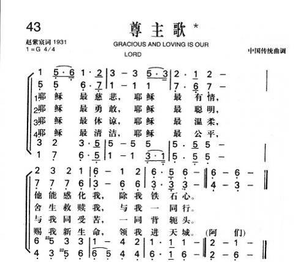

|
|
|
|
|
|
|
https://www.mred365.cn/szxg/7175.html

|
|
|
|
|

LX1834
Jesus, Merciful
172尊主歌
[華]
尊主歌
Jesus
merciful, Jesus pitying
赵紫宸詞；
調名：HUBBARD
中国汉族民间曲调
范天祥編曲 550.
Tune: HUBBARD
https://hymnary.org/text/jesus_merciful_most_friendly_most_kind
Translator: Frank W. Price; Author:
Zhao Zichen (1931); Alterer:
T. K. Chiu (1976)
| Text: | Jesus Merciful |
| Alterer: | T. K. Chiu |
| Author: | Tzu-chen Chao |
| Translator: | Frank W. Price |
| Tune: | HUBBARD |
| Arranger: | Bliss Wiant |
| Short Name: | Zhao Zichen |
| Full Name: | Zhao, Zichen, 1888-1979 |
| Birth Year: | 1888 |
| Death Year: | 1979 |
See also Tzu-Chen Chao.
Zhao Zichen (Chao Tzu-chen) 1888-1979, born in Deqing, Zhejiang (Chekiang), China in 1888. He had a solid classical Chinese education. Although he came from a Buddhist family, he attended a missionary middle school where he was introduced to the Christian faith and joined the church, although he was not baptized until 1908. Then he studied at Suzhou (Soochow) University, a missionary institution, graduating in 1911. A few years later, he went to the United States where, in the years 1914-17, he received M.A. and B.D. degrees from Vanderbilt University in Nashville, Tennessee. In 1917, he returned to the Methodist Dongwu University in Suzhou and taught there for six years. In 1926 he moved to Yenching University in Beijing (Peking) as a professor of theology. He became dean of the School of Religion in 1928, a post he held until 1952, when he was denounced politically and removed.
From 1910s until 1940s, Zhao, along with other colleagues such as Liu Tingfang (Timothy Lew), Xu Baoqian (Hsu Pao-ch'ien), and Wu Leichuan (Wu Lei-ch'uan), tried to make Christianity relevant to the needs of Chinese culture and society and tended to strip it of all supernatural elements. He was recognized in China by the mainline churches before the coming of the new government as one of its leading theologians. He was concerned that the church be purified both institutionally from its denominationalism and doctrinally from its many nonscientific views. He was also concerned that Christianity be related to Confucianism or, more broadly, to humanism.
During these decades, he was active on national Protestant scene, attending major conferences and organizations, including the National Chinese Christian Council and YMCA; participating in the International Missionary Council (IMC) meetings in Jerusalem in 1928; in Madras in 1938; and the first assembly of the World Council (WCC) at Amsterdam in 1948, where he was elected one of the six presidents of the WCC, representing East Asian churches. He resigned from this post in 1951 due to the break out of the Korean War.
Zhao went through several phases in his theological journey. In his early works---Christian Philosophy (Chinese, 1925) and The Life of Jesus (Chinese, 1935)---he espoused a liberal theological perspective. In his later writings---An Interpretation of Christianity, The Life of Paul (both in Chinese, 1947), and My Prison Experience (1948) --- he became more conservative in faith, especially after his imprisonment by the Japanese for several months in 1942. He also wrote many articles in English, especially for the Chinese Recorder in the 1920s and 1930s. In 1947 Zhao was awarded an honorary doctorate from Princeton University.
Zhao reconciled himself to the new Communist government after 1949 and participated in the China People's Political Consultation Meeting as one of five Christian representatives. When the Three-Self Movement was launched, he was one of the 40 church leaders who signed the "Three-Self Manifesto." In 1956 Zhao was accused of siding with American mission boards in their imperialism toward China and was forced to resign from his position as professor and dean at the School of Religion at Yanjing University. After that he descended into obscurity and apparently lost his faith long before his death. In many ways he was a liberal theologian, although Western terms do not do justice to his thought.
Zhao died in Beijing on November 21, 1979. He was rehabilitated officially a short time before his death.
--www.bdcconline.net/en/stories/z/zhao-zichen.php
詩歌賞析: 第43首
尊主歌*
Jesus Thou alone art worthy* 赵紫宸詞；范天祥編曲
经文：“我心里柔和谦卑，你们当负我的轭，学我的样式
……”(太
11：29)。
《尊主歌》是选自赵紫宸博士(事略见第30首)所著的《民众圣歌集》第20首，所用的曲调是中国汉族民间曲调；经范天祥
(事略参阅第31首)配以和声。范氏在为赵紫宸的《民众圣歌》谱曲时阐明：“熟悉教会音乐史的人，总知道基督教历来有假借俗乐改作圣乐的习惯。惟其如此，故能引民众深入圣教的奥妙
……教会用了此种俗乐，此种俗乐遂一举而为高洁的音乐,流传得广褒而长久了。中国音乐素缺四声合奏，难避西方音乐的影响。我们的尝试，相信是势所必然的事情。
”
诗、曲都很短,每节只有四句。在乐曲的和声处理上，前两句是按大调处理，后两句则按小调处理，唱起来和声比较丰富
。